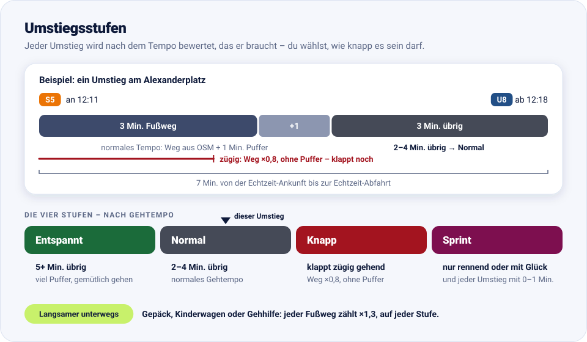
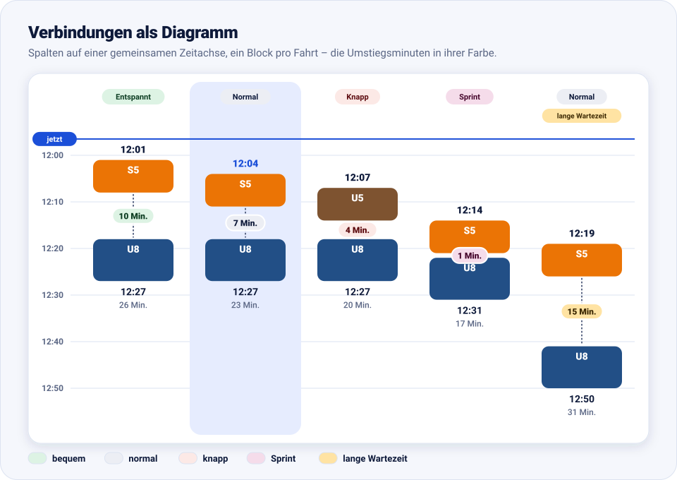
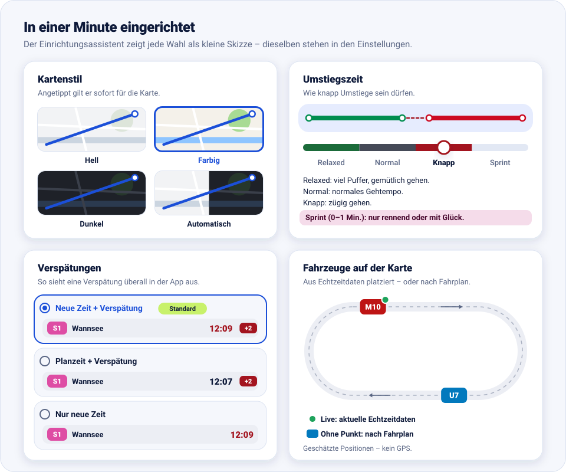
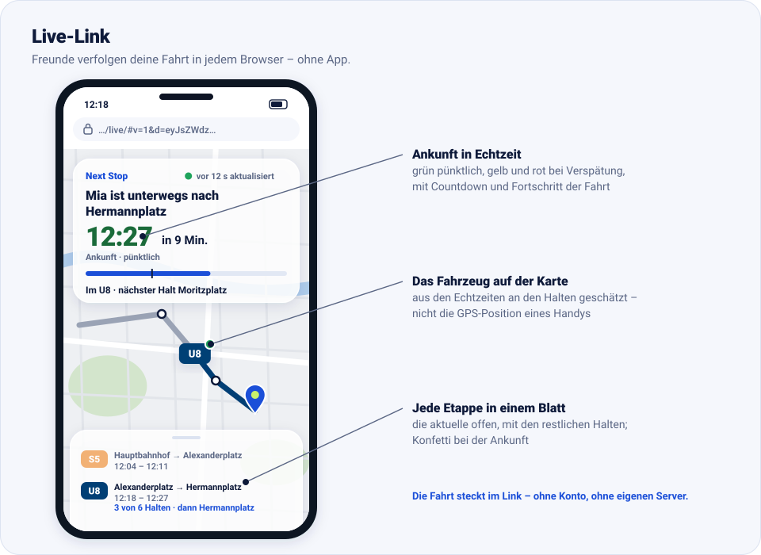
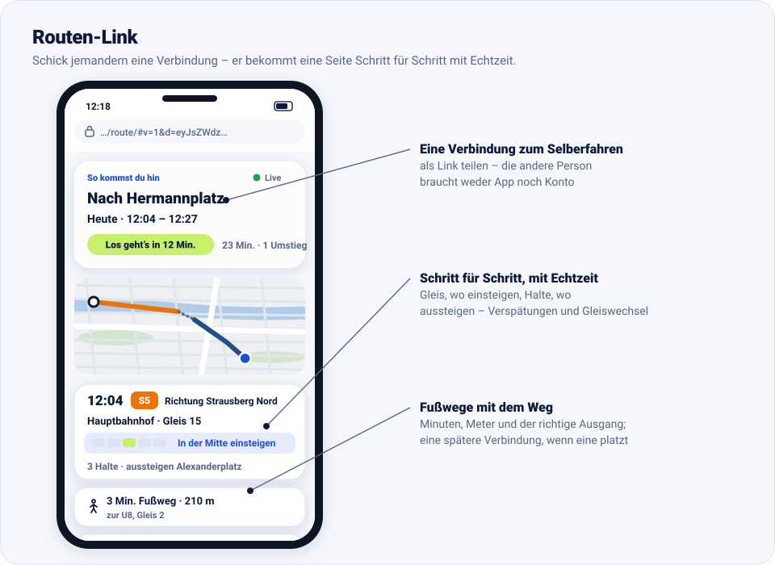
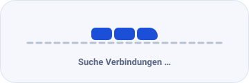

Umstiege nach Gehtempo
Jeder Umstieg ist entspannt, normal, knapp (zügig gehend) oder Sprint (nur rennend oder mit Glück) – aus Echtzeit und echtem Fußweg. Du wählst, wie knapp es sein darf.
Next Stop ist eine ÖPNV-App für Android und Wear OS. Sie weiß, wie lange ein Umstieg wirklich dauert, wo du einsteigst, wann es schneller geht und wann du aussteigst. Berlin zuerst, ganz Deutschland an Bord.
Noch kein Release – App, Uhr-App, Live- und Routen-Seite laufen bereits.
12:04 – 12:27 · 23 Min. · 1 Umstieg
Die meisten Fahrplan-Apps hören auf, sobald du eine Verbindung gewählt hast. Next Stop fängt dann erst an – auf offenen Daten, ohne Konto und ohne eigenen Server.
Jeder Umstieg ist entspannt, normal, knapp (zügig gehend) oder Sprint (nur rennend oder mit Glück) – aus Echtzeit und echtem Fußweg. Du wählst, wie knapp es sein darf.
Gemessen auf den OpenStreetMap-Fußwegen der Station: Treppen, Aufzüge, Bahnsteige – keine Luftlinie.
Nächster Schritt, Countdown und restliche Halte mit Echtzeit – in der App und als Live-Benachrichtigung.
„Vorne, Mitte oder hinten einsteigen“ – und als Erste an der Treppe zum Anschluss sein.
Sucht während der Fahrt weiter und meldet sich, wenn es schneller geht.
Kacheln, Komplikation, Live-Fahrt-Seiten, Karte und eigene Suche am Handgelenk – mit Aussteige-Vibration.
Freunde verfolgen deine Fahrt im Browser – oder bekommen eine Verbindung Schritt für Schritt zum Selberfahren.
Stationsdaten für alle 16 Länder aus OpenStreetMap, Fahrpläne bundesweit über Transitous – Fernverkehr und Fernbus inklusive.
Kein Konto, keine Werbung, kein Tracking – und kein Server von uns dazwischen.
Die Ideen hinter der App in ein paar Bildern – so, wie sie auch in der App aussehen.





Beide Seiten sind statisch. Die Fahrt steckt im Link-Fragment, das der Browser nie an einen Server schickt.
Kurz, weich und nie im Weg – und aus, wenn dein System weniger Bewegung wünscht.



Next Stop steht unter der GNU GPL 3.0. Der ganze Code – App, Uhr-App, Web-Seiten und die OpenStreetMap-Pipeline – liegt öffentlich auf GitHub. Fehler melden, Ideen einbringen, mitbauen: gern.
Code auf GitHubNein. Die App ist kostenlos und Open Source (GPL-3.0) – ohne Werbung, ohne In-App-Käufe, ohne Abo.
Berlin und Brandenburg mit der größten Tiefe (VBB/BVG, Einstiegshinweise, Aufzüge). Fahrpläne gibt es für ganz Deutschland über Transitous, Fernverkehr und Fernbusse inklusive; Stationsdaten für alle 16 Bundesländer aus OpenStreetMap.
Fahrpläne und Echtzeit von VBB und BVG sowie von Transitous (einem Community-Dienst mit offenen Fahrplandaten), Karten und Stationen von OpenStreetMap, Kartenkacheln von OpenFreeMap, die Ortssuche von Photon.
Nichts bei uns: Es gibt kein Konto, keine Analyse, keine Absturzberichte und keinen eigenen Server. Anfragen gehen direkt von deinem Gerät an die Fahrplan-, Karten- und Suchdienste, die du nutzt. Ein geteilter Live-Link trägt die Fahrt im Link-Fragment, das Browser nie an einen Server senden.
Sobald sie fertig ist. Bis dahin kannst du sie selbst aus dem Code bauen – die Anleitung steht im README auf GitHub.
Nein. Die Uhr-App ist ein Extra; die App auf dem Handy kann alles allein.
| Daten | Quelle | Lizenz |
|---|---|---|
| Karten- und Stationsdaten | © OpenStreetMap-Mitwirkende | ODbL 1.0 |
| Kartenkacheln | OpenFreeMap | OSM-Daten, ODbL |
| Fahrpläne Deutschland | Transitous – Quellen | je Feed |
| Fahrpläne Berlin/Brandenburg | VBB HAFAS, BVG REST (v6.bvg.transport.rest) | Bedingungen der Anbieter |
| Ortssuche | Photon (komoot) | OSM-Daten, ODbL |